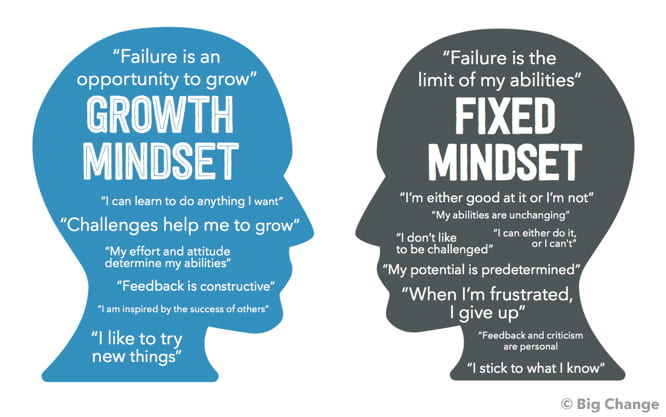

I definitely did get inspired by reading the human skill materials about growth mindset and neuroplasticity. After my research as well, I got even more inspired and had a major realisation
that all this time I've had this fixed mindset which affected my emotions such as anger and ego in such a negative way. After researching the difference between
growth mindset and fixed mindset; this really made me think of myself as a person and really makes me want to change and practice growth mindset to become a better learner,
future developer and fix my short term memory to long term. Having fixed mindset gave me such disadvantage to learning because I always thought to myself
"I'm either good at
something or I'm not"
There was no in-between. I didn't even give myself time to learn anything because I kept thinking "no, I won't be good at it and that I will fail" without even trying or
having a go at it. So most of the times, because of this fixed mindset I kept thinking of giving up and always made myself feel bad. I've been horrible to myself for so long and this
eye opening research might actually help me be more mindful about being nicer to myself and give myself time and patience; to learn and grow as a person and shape my neuroplasticity.
This was well and truly the best research I've done about shaping my brain in a positive way. This is something I will think about from now on for my benefit.
